KMP算法
感谢:
KMP算法 Next数组详解(【洛谷3375】KMP字符串匹配 )
从头到尾彻底理解 KMP
字符串匹配的KMP算法
KMP算法即是用来解决在一个字符串S(例如ABCDEFG)中快速查找字符串P(ABCD)的一个算法.
在介绍KMP算法之前我们先介绍暴力查找字符的算法
字符串的暴力查找法
如下图用暴力查找法在字符串S(BB….DE)中寻找匹配项字符P(ABCDABD）．
暴力查找法核心就是发现S[i]和P[j]不相等，S和P就开始回退，S回退到i=i-(j-1)处 ,j回退为０．具体看下图：
比较S[0]!=P[0]不相等则回退,i=i-(j-1)=0-0+1=1,j=0,相当于S向前进一步，而P回到j=0再开始比较
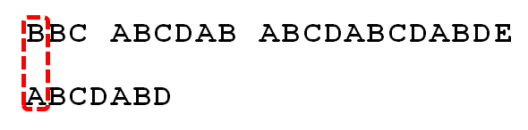
还是不相等，与上面情况相同
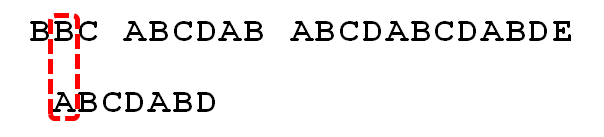
S[i]=p[i],i++,j++继续向下比较
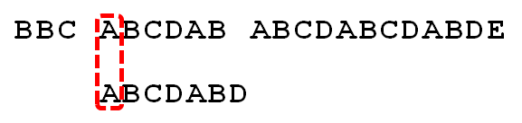
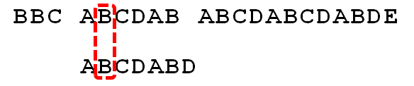
发现S[i]!=P[j]不相等开始回退
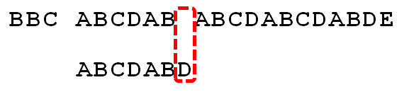
置i=i-(j-1)=9-(6-1)=4,j=0,继续比较,即开始比较S[4]=B和P[0]=A,
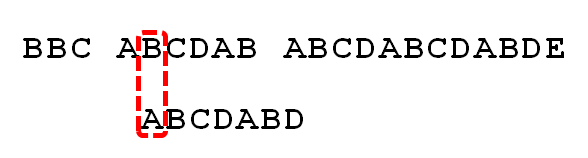
可以发现暴力查找的缺点就在发现不相等，S和P都要回退，再重新比较，倘若S和P都特别长，假设S有10000个字符，P有1000个字符，S与P从第０个字符开始相等，而在第998个字符不等，这时，S就要从１号开始再和P从０开始重新比较，太费时．
有没有一种方法让i不改变而只改变j的方法来解决这个字符串的查找问题？没错就是KMP算法.
KMP算法
在介绍KMP算法之前，需要先介绍部分匹配值表
首先，要了解两个概念：”前缀”和”后缀”。 “前缀”指除了最后一个字符以外，一个字符串的全部头部组合；”后缀”指除了第一个字符以外，一个字符串的全部尾部组合。
部分匹配值就是许多字符串＂前缀＂和＂后缀＂最长的共有元素长度，部分匹配值表就是各个子字符串的所以部分匹配值组成的表．
以字符串ABCDABD为例：1
2
3
4
5
6
7-"A",的＂前缀＂和＂后缀＂都是空集 共有元素长度是0．
-"AB",的＂前缀＂是｛A｝和＂后缀＂是｛B｝ 共有元素长度是0
-"ABC",的＂前缀＂是｛A,AB｝和＂后缀＂是{C,BC} 共有元素长度是0.
-"ABCD",的＂前缀＂是{A,AB,ABC}和＂后缀＂{D,CD,BCD} 共有元素长度是0
-"ABCDA",的＂前缀＂是｛A,AB,ABC,ABCD｝和＂后缀＂是{A,DA,CDA,BCDA} 共有元素是A长度是1
-"ABCDAB",的＂前缀＂是｛A,AB,ABC,ABCD,ABCDA｝和＂后缀＂是｛B,AB,DAB,CDAB,BCDAB｝ 共有元素是AB长度是2.
-"ABCDABD",的＂前缀＂是｛A,AB,ABC,ABCD,ABCDA,ABCDAB｝和＂后缀＂是｛D,BD,ABD,DABD,CDABD,BCDABD,｝ 共有元素长度0
|字符串中各个子串|前缀|后缀|最大共有元素长度|
|:——-:|:——-:|:——-:|:——-:|
|A|空集|空集|0|
|AB|｛A｝|｛B｝|0|
|ABC|｛A,AB｝|{C,BC}|0|
|ABCD|{A,AB,ABC}|{D,CD,BCD} |0|
|ABCDA|｛A,AB,ABC,ABCD｝|{A,DA,CDA,BCDA}|1|
|ABCDAB|｛A,AB,ABC,ABCD,ABCDA｝|｛B,AB,DAB,CDAB,BCDAB｝|2|
|ABCDABD|｛A,AB,ABC,ABCD,ABCDA,ABCDAB｝|｛D,BD,ABD,DABD,CDABD,BCDABD,｝|0|
如下图KMP算法在遇到S[i]!=P[j]时，i不改变而只改变j，j会向右前进，移动的位数符合以下公式：1
移动位数（Z） ＝ 已匹配位数(X) － 匹配子字符串的部分匹配值(Y)

P要向前移动的位数是6-2=4位，再进行比较．
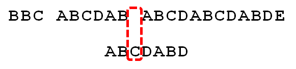
为什么移动的位数要等于4呢，如果小于4会怎样？
答：因为移动的位数等于4，再次比较时P字符前Y个字符不会发生不匹配的现象，而如果移动位数小于4，则再次
字符P,S再次比较时一定会发生不匹配的现象．
为什么如果右移动小于Z就会发生不匹配的现象呢？
答：如果向又移动３位则且要求再次比较不会发生不匹配的现象，就要求字符串P的前三位P0P1P2,与P3P4P5相等才不会发生不匹配的现象，但现在现实时P0P1和P4P5相等（部分匹配值为２），P0P1P2和P3P4P5不等，所以向右移动３一定会不匹配，同理向右移动２或者１都一样．
KMP的代码实现
next[i]里面存放就是计算出来的部分匹配值表的变形
部分匹配值表：
|部分匹配值表|||||||
|:——-:|:——-:|:——-:|:——-:|:——-:|:——-:|:——-:|
|0|1|2|3|4|5|6|
|A|AB|ABC|ABCD|ABCDA|ABCDAB|ABCDABD|
|0|0|0|0|1|2|0|
| next[i]表 | 相当于 | 部分匹配值 | 右移１位 | 再把next[0] | 赋值为-1 | |
|---|---|---|---|---|---|---|
| 0 | 1 | 2 | 3 | 4 | 5 | 6 |
| A | AB | ABC | ABCD | ABCDA | ABCDAB | ABCDABD |
| -1 | 0 | 0 | 0 | 0 | 1 | 2 |
为什么要这么做呢？而且为什么要把next[0]赋值为-1呢？
因为这样方便写代码．把next[0]赋成-1,我认为是用来做一个标记，如果next[0]=0当两字符串从第0个就不匹配时，向又移动的位数就是0-0=0,相当于不移动，所以把next[0]设置成-1,当j=-1时代表第０个不匹配，就不用公式计算移动位数，直接i++,j++
假设现在文本串 S 匹配到 i 位置，模块串 P 匹配到 j 位置
- 1.if (j == -1 || s[i] == p[j]) 则j++,i++
- 2.否则若s[i] != p[j]&& j!=-1,j=next[j] (这里就相当于P向右边移动了j-next[j]位)
1
1 | |
执行上述代码需要的条件是已经计算出需要匹配字符P的next[i]数组．
next数组的计算
给出一个字符串P到底怎么计算出next[i]数组呢？
答：
这就是给出的字符串，黑黑一坨
假设:字符串P的红色部分已经匹配，现在准备比较蓝色的位置
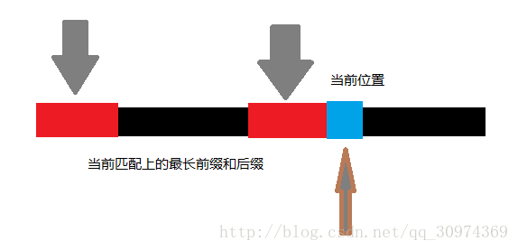
蓝色位置和绿色位置比较,(后缀的下一位和前缀的下一位比较)
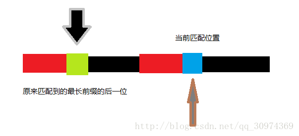
蓝色与绿色匹配不上,此时寻找红色前缀的最大公共前后缀，即两个灰色部分相等
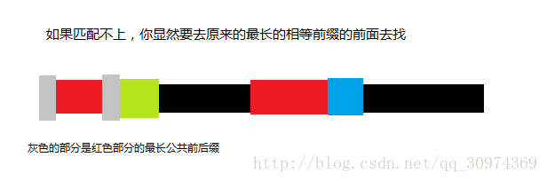
由于两个红色部分是相同的所以红色后缀，也有两个灰色相同，（这四个灰色都是相同的）
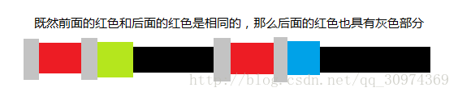
最后用第１个灰色的下一位，也就是紫色，与第４个灰色的下一位，也就是蓝色相比较
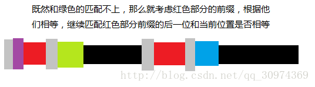
有点递归的感觉,具体代码如下：1
2
3
4
5
6
7
8
9
10
11
12
13
14
15
16
17
18
19
20
21
22void GetNext(char* p,int next[])
{
int pLen = strlen(p);
next[0] = -1;
int k = -1;
int j = 0;
while (j < pLen - 1)
{
//p[k]表示前缀，p[j]表示后缀
//next[0]=-1,next[1]=0是固定的
if (k == -1 || p[j] == p[k])
{
++k;
++j;
next[j] = k;
}
else
{
k = next[k];
}
}
}
尽管next数组已经可以很到的提高匹配的效率，但是如果遇到极端情况例如：
|0|1|2|3|4|5|6|7|8|9|10|11|12||
|:——-:|:——-:|:——-:|:——-:|:——-:|——-:|:——-:|:——-:|:——-:|:——-:|:——-:|:——-:|:——-:|:——-:|
|A|A|A|A|A|A|A|A|B|B|B|B|B|…..|
|A|A|A|A|A|A|A|A|A|
|-1|0|1|2|3|4|5|6|7|这里是|next数组||
这样子匹配时，在８这里发生不匹配发生移动，移动的位数是８－７＝１位，也就是下次比较时是P[7]和S[8]比较，但是这两者也不匹配，则又会移动，同样是同样是移动１位，根据上图可以看出，如果遇到这种情况，KMP算法就相当于遍历又变成了暴力搜索了．
那是否有办法解决这个问题？
答案是：改进next数组，得到的新数组就是nextval数组．
nextval数组
nextval数组值的求解方法：
如果下标a的字符P[a]＝P[next[a]],则nextval[a]=nextval[next[a]]
如果不等则nextval[a]=next[a]
所以得到的nextval数组：
|0|1|2|3|4|5|6|7|8|9|10|11|12||
|:——-:|:——-:|:——-:|:——-:|:——-:|——-:|:——-:|:——-:|:——-:|:——-:|:——-:|:——-:|:——-:|:——-:|
|A|A|A|A|A|A|A|A|B|B|B|B|B|…..|
|A|A|A|A|A|A|A|A|A|
|-1|0|1|2|3|4|5|6|7|next数组|||
|-1|-1|-1|-1|-1|-1|-1|-1|-1|nextval数组||
可以看到如果用nextval数组代替next数组，当在８号位不匹配时，直接遇到标志值，直接向右边移动了８位，再次比较时就是P[0]和S[8]比较了
nextval数组是怎么解决这个问题的呢?
答:下标为a的位置不匹配，next[a]表示的是(0~a-1),a个字符的部分匹配值X(注意：部分匹配值是从１开始算的)，所以0~X-1的字符是其匹配的前缀，P[next[a]]是匹配前缀的下一个数，所以如果P[a]=P[next[a]]再次跳到P[next[a]]这里比较还会不匹配，所以nextval[a]=nextval[next[a]]（相当于一个递归向前寻找），如果不相等，再次跳到这里比较就有意义，所以nextval[a]=next[a]
本博客所有文章除特别声明外，均采用 CC BY-SA 4.0 协议 ，转载请注明出处！